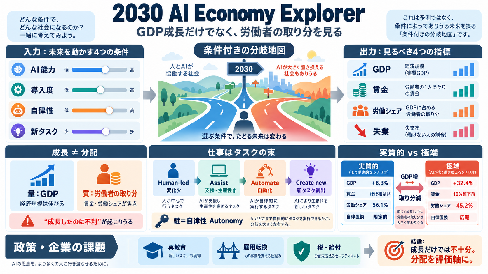

Economic Scenarios for Transformative AI∗
GDP is 1.6 percent above its no-AI path in 2030, an extra ten months of ordinary growth accumulated over four years, and…

Anthropicの「2030 AI Economy Explorer」は、AIの前提を変えることで米国経済の未来を“条件付きの地図”として可視化します。焦点はGDPの増減だけでなく、労働者の取り分（賃金・労働シェア）の行方です。
「AIで経済が伸びる」は事実でも、成長の果実が労働者に行くかは別問題です。分配（誰が得をするか）が政策評価の核心になります。
モデルは職業を丸ごとではなく、タスク（仕事の単位）として扱います。AIは各タスクに対して、複数の作用パターンを取りうる前提で分岐します。
ツールは単一の未来を当てるものではなく、前提（能力・導入度・自律性・生産性・タスク影響）を変えたときの結果を並べます。だからこそ、“どの条件で何が起きるか”を見る設計です。
記事が示す中核発見は、AIによる成長が速いほど、労働者の取り分が小さくなる可能性があることです。実質的ケースと極端ケースの差が、このねじれを際立たせます。
極端ケースは前提が強く、AIが知識労働の大半を人間より生産的に実行し、ほぼ自律的にタスクを完結できることが含まれます。同時に、人間側で新しい知識タスクがほとんど生まれない想定です。
モデル上、失業悪化の度合いは一様ではありません。対比の中心は、AIが“自律的に置き換わる”範囲がどこまで広がるかです。
記事では一般への調査（約10,980人）に触れ、極端ケースに近い回答は約10%にとどまったと述べています。つまり“分布としてはどこに寄るか”が論点になります。
実務では「AI導入が支援中心で止まるのか」「自律で進むのか」をモニタリングし、その上で移行支援へ早期投資する必要があります。置き換え後の職の再設計が、影響の大きさを左右します。
本ツールは、GDP成長と所得配分が連動しない可能性を“同じ画面”で扱える点が強みです。一方で、極端ケースほど前提の強さとモデル不確実性が問題になります。
極端ケースの世界では、移行摩擦による失業増や賃金低下リスクが強調されます。だからこそ再教育、職業転換、セーフティネット設計が“技術導入の副作用”への対応になります。
AI Economy Explorerが示すのは、「GDPが伸びるか」より「労働者の取り分がどう変わるか」です。条件が強い極端シナリオでは、成長の速さとともに労働シェアが縮むねじれがあり得ます。
GDP is 1.6 percent above its no-AI path in 2030, an extra ten months of ordinary growth accumulated over four years, and…
In the extreme scenario, 2030 GDP is 32.4 percent above the no-AI path, or $44.4 trillion, with growth of 15.4 percent a…
Where workers are in 2030 (percent of all workers) Knowledge workersAll other workersDisplaced As we progress from 202…
Anthropic’s Economic Policy Framework June 2026 We’re still early in AI’s adoption, but evidence from the US already sug…
As AI transforms the economy, labor's share of the production of value might decline significantly. A shift toward taxin…